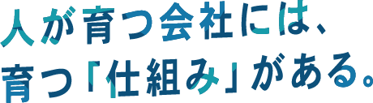
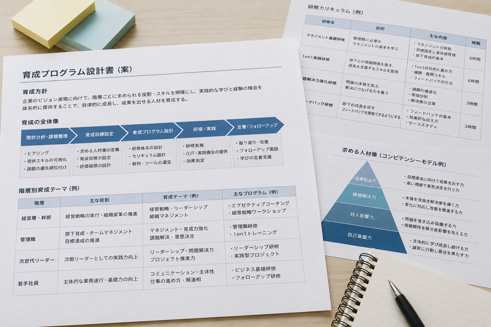
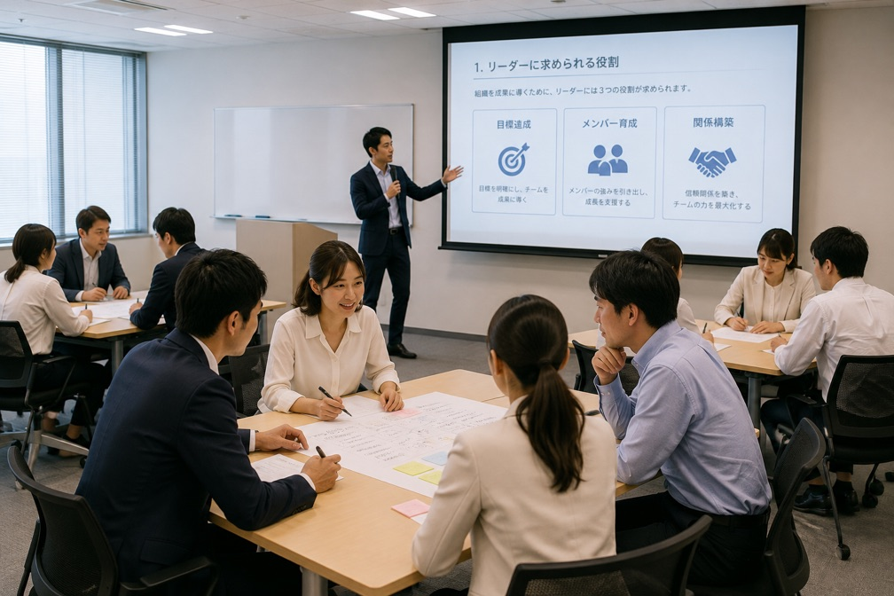
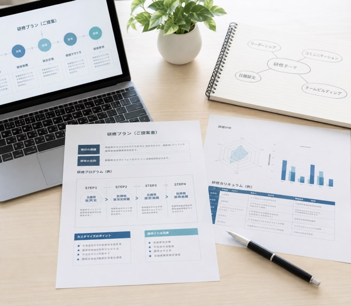

管理職育成から組織づくりまで。
現場で実践される人材育成を、
設計から定着まで伴走します。
- 研修満足度 96.4%
- 導入企業 350社以上
- 研修実施 1,200回以上
こんな人材育成のお悩み、
ありませんか？
-
01｜管理職が育たない
プレイヤーとしては優秀でも、部下の育成やマネジメントができる管理職が少ない。
-
02｜研修が現場で活かされない
研修直後は意識が高まるものの、数週間すると元の状態に戻ってしまう。
-
03｜人材育成が属人化している
上司によって指導方法が異なり、社員の成長スピードにばらつきがある。
-
04｜次世代リーダーが育っていない
将来の管理職・経営人材となる社員を計画的に育成できていない。
その原因、「研修」ではなく「仕組み」にあるかもしれません。
一度きりの研修だけでは、人も組織も簡単には変わりません。
必要なのは、自社が求める人材像を明確にし、現場で実践し、振り返り、成長につなげる仕組みをつくること。
NEXLEADは、研修を提供するだけではなく、企業ごとの課題を分析し、人材育成の仕組みそのものから設計します。
研修を「受けて終わり」
にしない。
現場が変わるまで伴走します。
-
STEP 01課題分析
経営者・人事担当者へのヒアリングを通じて、組織や人材の現状を整理。丁寧なヒアリングを通して、課題を明確にすることで、個別性のあるアプローチへと繋げます。
-

STEP 02育成設計
ヒアリングによって求める人材像・必要なスキルを明確にし企業ごとの育成プログラムを設計。これによって企業にとって最も効果的なアプローチが可能になります。
-

STEP 03研修・実践
講義だけでなくケーススタディやワークを取り入れ、現場で使えるスキルを習得。具体的な事例をもとに行うことで、理解度が深まり、実践に即反映できます。
-
STEP 04定着支援
研修後の振り返りやフォローアップを行い、学びを実務へ定着。その場限りで終わることのないように、個々の理解度を確認し、確実な実践へと繋げていきます。
NEXLEADが選ばれる
3つの理由
-
01

企業毎の完全オーダーメイド
決められた研修を提供するのではなく、組織規模・業界・経営課題に合わせてプログラムを設計。
-
02
実践型プログラム
座学だけでなく、ケーススタディ・グループワーク・ロールプレイングなどを取り入れ、現場で使える力を身につけます。
-
03
研修後まで伴走
研修実施後も振り返りやフォローアップを行い、「知っている」から「できる」への変化を支援します。
人が育てば、
組織はもっと強くなる。
貴社に必要な人材育成を、私たちと一緒に考えてみませんか？
人材育成に関するお悩みやご相談を無料で承っています。
研修プログラム
-
管理職育成研修
部下育成・目標設定・1on1・フィードバックなど、管理職に必要なマネジメントスキルを実践的に習得。
-
新任管理職研修
プレイヤーからマネージャーへの役割転換を支援。チーム運営や部下との関わり方など、管理職としての基礎を身につけます。
-
次世代リーダー育成研修
次期管理職候補を対象に、リーダーシップ・問題解決・チームマネジメントなど、将来の組織を担う力を育成。
-
管理職育成体系の構築支援
自社が求める管理職像を明確にし、階層や役職に応じた中長期的な育成プログラムを設計。
導入事例
導入までの流れ
-
STEP 01
お問い合わせ
まずは現在の人材育成についてお気軽にご相談ください。
-
STEP 02
ヒアリング
組織の現状・経営課題・育成したい人材についてお伺いします。
-
STEP 03
プログラムご提案
ヒアリング内容をもとに、最適な育成プログラムをご提案。
-
STEP 04
研修実施
経験豊富なコンサルタント・講師が研修を実施。
-
STEP 05
フォローアップ
研修後の振り返り・効果測定を行い、現場への定着を支援。
よくあるご質問
- Q.研修内容は、自社の課題に合わせてカスタマイズできますか？
- A.はい。事前のヒアリングをもとに、組織の課題や対象者、育成したい人材像に合わせて研修内容を設計します。既存のプログラムをそのまま実施するのではなく、各社に適した内容をご提案します。
- Q.研修後のフォローもお願いできますか？
- A.はい。研修後の振り返りやアンケート、現場での実践状況の確認など、定着に向けたフォローにも対応しています。「受けて終わり」にせず、学びが現場で活かされるまで伴走します。
- Q.まだ具体的な研修内容が決まっていなくても相談できますか？
- A.もちろんです。「管理職が育たない」「次世代リーダーを育成したい」など、漠然とした課題の段階からご相談いただけます。現状をヒアリングしたうえで、課題整理から最適な育成プランをご提案します。
人が育てば、
組織はもっと強くなる。
貴社に必要な人材育成を、私たちと一緒に考えてみませんか？
人材育成に関するお悩みやご相談を無料で承っています。